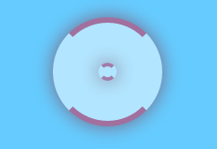

Leap Motion utiliza una librería en Javascript llamada leapstrap, a través de ella podemos aceder a Leap Motion y realizar cualquier tarea, para ello, utilizamos en este caso un cursor, el cual se muestra en la imagen:

Como se ha visto en el menú principal, esta página tiene un ejemplo en el que podrás jugar a un cubo de rubik y poder interactuar con él, además de poder interactuar con todos los elementos de la pantalla.
Realizando el siguiente movimiento, se puede hacer "scroll" con el dedo, en las páginas habilidatas para ello: